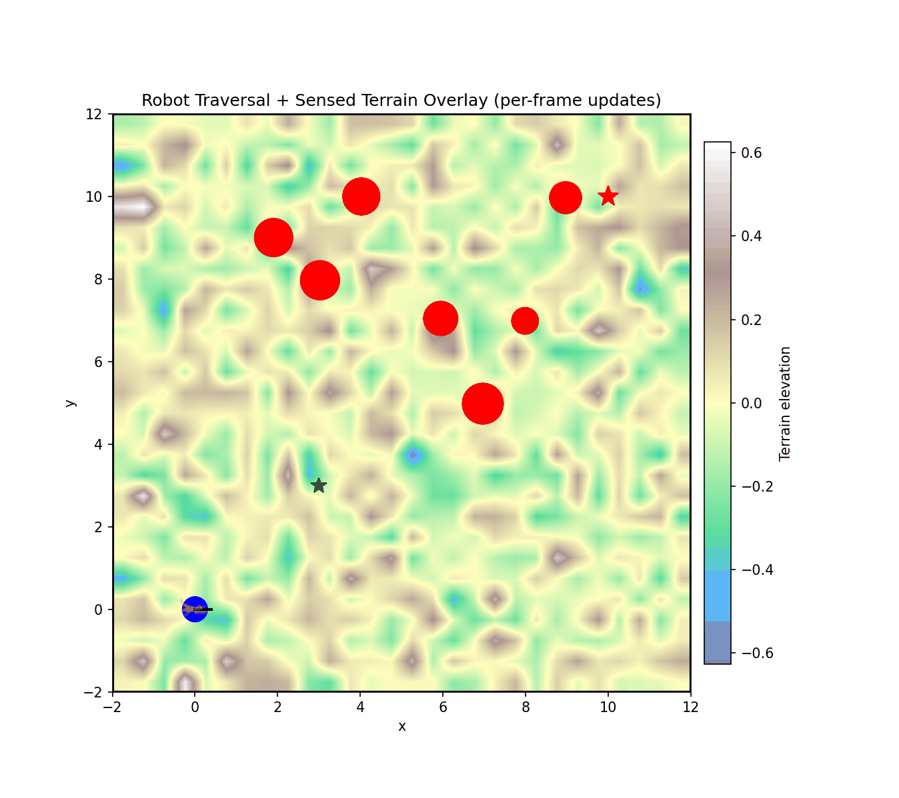
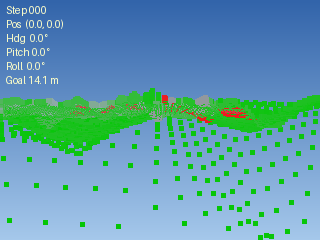

As a URA for the Bakolas Research Group, I focus predominantly on real-time trajectory optimization algorithms for autonomous ground vehicles. My research involves developing and implementing formal optimal control methods that enable ground robots to navigate complex environments efficiently and safely. I work on both the theoretical development of these algorithms and their practical implementation on robotic platforms.
I have worked on various projects with the Bakolas Research Group. Currently, I am working on algorithmic acceleration of Model-Predictive Path Integral (MPPI) control for autonomous navigation in static and dynamic environments through modern machine learning techniques. I have previously worked on real-time trajectory optimization for autonomous navigation in dynamic and terraneous environments via MPPI control. To read about it, click the section labeled "DTAP-MPPI: Dynamic Terrain-Aware Perceptive MPPI."
The aim of this research is to develop an optimal control algorithm for a ground robot navigating terraneous environment. In hilly or random terrain, the robot must be able to plan trajectories that account for the terrain's influence on the robot's dynamics. The proposed algorithm, DTAP-MPPI, extends the Model-Predictive Path Integral (MPPI) control framework to incorporate terrain awareness and perceptive capabilities. By integrating terrain information into the control optimization process, DTAP-MPPI enables the robot to generate trajectories that are not only optimal with respect to the robot's dynamics but also safe and efficient in complex environments. The algorithm is designed to operate in real-time, allowing the robot to adapt its trajectory on-the-fly as it encounters new terrain features and obstacles. This research has significant implications for the deployment of autonomous ground vehicles in off-road and unstructured environments, where traditional control methods may struggle to account for the complexities of the terrain.
DTAP-MPPI builds on the standard MPPI control framework, which is a sampling-based optimal control method which samples thousands of control sequences and derives the optimal control input as a weighted sum of the control sequence perturbations ((Williams, 2015).) We extend this framework to incorporate information on obstacle trajectories and terrain by augmenting the cost function. To evaluate dynamic obstacles, we implement parallelized Monte Carlo simulation of R=50 probabilistic trajectories which are cumulatively evaluated to derive a risk metric which is then incorporated into the cost function (Trevisan, 2025). To evaluate terrain, we implement a fictitious camera sensor which derives a point cloud representation of the terrain in front of the robot at each time step. This point cloud is then fed into two traversability evaluators, similar to the architecture posed in Lacroix, 2002. The first is a Bayesian classifier which evaluates the traversability of the stitched terrain based on its expected elevation and slope, as well as its uncertainty. The second is a digital elevation map (DEM) which derives an expectation on the slope and elevation of the terrain with some confidence. For points sampled several times over, the DEM stitches these samples together to derive a more precise and accurate estimate of the terrain. A terrain costmap is subsequently derived from the traversability evaluations and incorporated into the cost function. To robustly navigate the terrain, we also implement a waypoint heuristic to encourage the robot to navigate through more traversable regions of the terrain.
For ease of navigation in dynamic environments, we implement an adaptive covariance scheme which increases the control sequence perturbation covariance when the robot is in close proximity to dynamic obstacles. This encourages exploration of more diverse trajectories, which brings the sampled optimal control input closer to the true optimal control input in dynamic environments.
This is not a very rigorous proof, but it provides some intuition on why the adaptive covariance scheme improves navigation in dynamic environments.

The robot (blue) navigates to the goal (green) while avoiding a dynamic obstacle (red) and navigating through terrain with varying traversability (view colorbar for elevation).

The robot's point of view as it navigates through the terrain. Green dots = traversable terrain, red dots = untraversable terrain (according to the Bayesian classifier).
If the embedded presentation does not load, open the ME 177K Final Presentation.
Follow the installation guide on my GitHub repository linked here.